>Habilidad VerbalTexto N.º 1 Los virus del papiloma humano (VPH) son un grupo de virus relacionados entre sí. Pueden causar verrugas en diferentes partes del cuerpo y existen más de 200 tipos. Cerca de 40 de ellos afectan a los genitales. Estos se propagan a través del contacto sexual con una persona infectada. También se pueden transmitir a través de otro contacto íntimo de piel a piel y, algunos de ellos, pueden desarrollar un cáncer.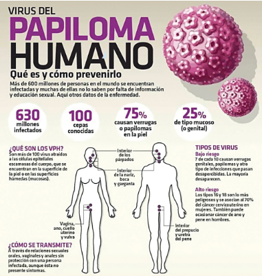 Las infecciones por VPH son muy comunes, por tal razón, casi todas las personas sexualmente activas se infectan poco después de iniciar su vida sexual. Algunas desarrollan verrugas por ciertas infecciones de VPH de bajo riesgo y los profesionales de la salud, en general, pueden diagnosticarlas al observarlas. Sin embargo, existen otros tipos (incluyendo las de alto riesgo) que no tienen síntomas. Si una infección por VPH de alto riesgo dura muchos años y causa cambios en las células es posible que el afectado presente síntomas; también si esos cambios celulares se convierten en cáncer. Los posibles síntomas dependerán de la parte del cuerpo afectada. 1. ¿Cuál es el tema principal que se desarrolla en el texto y el gráfico?
2. El verbo DESARROLLAR se emplea en el sentido de
3. A partir de la información proporcionada en el texto y en el gráfico, resulta incompatible sostener que algunas personas infectadas con VPH
4. Tanto del texto como del gráfico, se desprende que una persona infectada con VPH.
5. El texto indica que existen más de 200 tipos de VPH y en el gráfico se sostiene que existen 10 cepas conocidas de este virus. Esto significa que
Texto 2A Estos son algunos argumentos, desde el punto de vista histórico, que hay detrás de la intervención militar rusa, según las propias palabras de Putin: el gobernante ruso considera que “Ucrania no es solo un país vecino. Es parte inalienable de nuestra propia historia, cultura y espacio espiritual. Estos son nuestros camaradas, los más queridos para nosotros, no solo colegas, amigos y personas que alguna vez sirvieron juntos, sino también parientes, personas unidas por sangre, por lazos familiares”. Mantiene, también, que la Ucrania moderna fue creada completamente por Rusia o, para ser más precisos, por la Rusia bolchevique, comunista. Putin defiende que dentro de lo que fue la antigua Unión Soviética, las fronteras entre repúblicas nunca fueron vistas como fronteras estatales; eran nominales dentro de un solo país que, si bien presentaba todos los atributos de una federación, estaba altamente centralizado. Y, tras la caída de la URSS, Moscú reconoció las nuevas realidades geopolíticas; de hecho, hizo mucho para que Ucrania se estableciera como un país independiente, asegura Putin. A lo largo de la difícil década de 1990 y en el nuevo milenio, “hemos brindado” un apoyo considerable a Ucrania, dice Putin, que reitera que Ucrania y Rusia se han desarrollado como un solo sistema económico durante décadas y siglos. “La profunda cooperación que tuvimos, hace 30 años, es un ejemplo que la Unión Europea debe admirar. Somos socios económicos complementarios naturales. Una relación tan estrecha puede fortalecer las ventajas competitivas, aumentando el potencial de ambos países”, defiende, al criticar la intención de Kiev de acercarse al bloque comunitario. Y culpa a las autoridades ucranianas actuales de la decadencia en la que, según dice, ha caído ahora el país y en el hecho de que el odio a lo ruso es el sustento del nuevo Estado. Texto 2B La única posibilidad de que se abran negociaciones de paz, en el más serio conflicto que atraviesa el mundo, es que la dirección que Putin ejerce en los asuntos rusos se vea reducida o compartida con los jefes militares o políticos, quienes, sin duda, ven con sombrías perspectivas lo que se avecina. Pero no parece que las cosas hubieran llegado a esos extremos. Por lo menos, no todavía, aunque, sin duda, caminan en esa dirección. Parece mentira: el capricho de un jefe de Estado nos ha llevado a esta situación tan gravemente comprometida que depende exclusivamente de Rusia que se abran unas negociaciones de paz justas, es decir, que garanticen la independencia de Ucrania. Esto no es posible si Rusia no está dispuesta a devolver todos los territorios de ese vecino país que ha conquistado. Y Ucrania no se someterá a una humillación más, con todos esos muertos que tiene y el heroísmo de que ha dado testimonio en esta guerra injusta que un gigante maltrecho ha llevado a su territorio. La posibilidad de que se abran unas negociaciones de paz depende de que los jerarcas de Rusia (nadie sabe quiénes son todavía) mermen o cancelen el poder que ha venido ejerciendo Putin. Pero es demasiado pronto para que aquello ocurra. Mientras tanto, esta guerra continuará, llenando los campos de Europa con víctimas inocentes. ¿Hasta cuándo?Texto 2B La única posibilidad de que se abran negociaciones de paz, en el más serio conflicto que atraviesa el mundo, es que la dirección que Putin ejerce en los asuntos rusos se vea reducida o compartida con los jefes militares o políticos, quienes, sin duda, ven con sombrías perspectivas lo que se avecina. Pero no parece que las cosas hubieran llegado a esos extremos. Por lo menos, no todavía, aunque, sin duda, caminan en esa dirección. Parece mentira: el capricho de un jefe de Estado nos ha llevado a esta situación tan gravemente comprometida que depende exclusivamente de Rusia que se abran unas negociaciones de paz justas, es decir, que garanticen la independencia de Ucrania. Esto no es posible si Rusia no está dispuesta a devolver todos los territorios de ese vecino país que ha conquistado. Y Ucrania no se someterá a una humillación más, con todos esos muertos que tiene y el heroísmo de que ha dado testimonio en esta guerra injusta que un gigante maltrecho ha llevado a su territorio. La posibilidad de que se abran unas negociaciones de paz depende de que los jerarcas de Rusia (nadie sabe quiénes son todavía) mermen o cancelen el poder que ha venido ejerciendo Putin. Pero es demasiado pronto para que aquello ocurra. Mientras tanto, esta guerra continuará, llenando los campos de Europa con víctimas inocentes. ¿Hasta cuándo? 6. La controversia que se observa en ambos textos gira en torno a
7. En el texto A, el antónimo contextual del adjetivo NOMINAL es
8. Resulta incompatible con la perspectiva de Vargas Llosa proponer que la iniciativa de paz para Ucrania provendría de
9. Putin atribuye a la política antirrusa del Estado ucraniano
10. Cabe inferir que, para Vladimir Putin, el zarismo y el bolchevismo compartirían un rasgo político común: ambos implementaron
Texto N.º 3 In recent years, the sea lions have appeared in unexpected –and sometimes populated– places, including a golf course and a forest. Now, a new study could help New Zealanders live with their neighbors and protect them in the future by predicting where the animals could appear. The research, published in en academic joumal, integrales algorithm-based modele with data from wildlife experts for a better forecast. ‘It just gives us a lot of more Information to better arm ourselves for managing the growth of the population’ said Laura Boren, a science adviser for the New Zealand Department oí Conservation. “So that people can really stars welcoming back sea Ilons and not be afraid of bumping into them, because they ere really cool animals,” Boren said. Sea Ilons are “generally quite confident around people,’ according to her. ‘They may completely ignore you if they are resting but may chale people and dogs that approach too closely. Boren said that people, stumbling upon sea lions In the bush’, could find them intimidating, particularly as adult females can weigh more than 400 pounds and intent on defending their pups. By contrast, younger animals can be “just really cheeky and they’ll like lo play gamas,’ she added. The sea lions bred long ego along the coast of New Zealand, until hunting drove them away. A rare sea lion species threatened with extinction –some 10,000 remain, facing risks from fisheries and desease– they had moved deep finto the New Zealand Subantarctic Islands to the south to bread instead. 11. By the context, the word APPROACH means to
12.How is science helping to establish a good coexistence between sea lions and New Zealander?
13. Which of the following sentences summarizes the main idea of the text?
14. According to the text, which of the following sentences is false?
15. It can be inferred from the text that
16. Hay seis cantidades en una elección escolar, en la que el ganador será quien obtenga la mayor cantidad de votos; después de contar el 90 % de los votos, los resultados preliminares fueron los siguientes: ALEX 21 DIANA 20 JORGE 18 DORIS 12 JULIO 10 SELMA 9Si cada voto es favorable a algún candidato, ¿cuántos candidatos todavía tienen posibilidades de ganar las elecciones?
17. En la consecuencia de figuras mostradas, formada por fichas numeradas con números pares consecutivos, determine la suma de las cifras del número que está escrito en la ficha central de la figura 30.
18. Manuel tiene seis canicas idénticas en forma y tamaño. Todas las canicas tienen el mismo peso, con excepción de dos que tienen más peso que las demás. Si estas dos canicas que tienen más peso, pesan igual, ¿cuántas pesadas, como mínimo, debe realizar Manuel en una balanza de dos platillos, para identificar, con seguridad, las dos canicas que tienen más peso?
19. Julia y Rodolfo nacieron el domingo 29 de febrero de 2004. El 28 de febrero de 2023 se comprometieron a contraer matrimonio el 29 febrero del año en el cual esta fecha sea domingo nuevamente por primera vez, como el día en que nacieron. Si ellos mantienen su compromiso, la boda se realizará en el año
20. En un campeonato de fútbol, participaron los equipos Huancas. Quechuas y Aimaras, jugando todos contra todos, en una sola ronda. En la tabla, se muestra la cantidad de goles a favor y goles en contra de los tres equipos al finalizar el campeonato. Si hubo dos empates, ¿cuál fue el resultado del partido entre los Huancas y los Quechuas, respectivamente?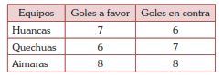
21. La figura mostrada está formada por puntos, donde tres puntos contiguos son equidistantes, es decir, vértices de un triángulo equilátero, y los puntos de la primera fila están numerados desde 1 hasta 241. Un móvil A demora en desplazarse de un punto a otro contiguo, 10/9 segundos. Si el móvil A se encuentra en el punto con numeración 1, ¿cuál es el menor tiempo que demorará en desplazarse por todos los puntos hasta finalizar en el punto con numeración 241?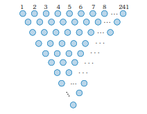
22. Armando, Bruno, César, Daniel, Ernesto y Fernando viven en un mismo edificio de ocho pisos y cada uno en un piso diferente. Armando vive a tres pisos tanto de Bruno como de César, el segundo y sexto piso no están habitados. César, para ir al piso donde vive, siempre utiliza el ascensor para subir. Fernando vive en el último piso. Si Daniel y Ernesto suben juntos desde el primer piso utilizando el ascensor, Daniel llega primero al piso donde vive. ¿En qué piso vive Ernesto?
23. En la elección del secretario general de un partido político, votaron 600 electores. En esta contienda se presentó un solo candidato y para su elección requirió, como mínimo, el voto de la mitad más uno de los electores. Como en una primera votación no alcanzó la cantidad de votos necesarios, se llevó a cabo una segunda votación con la misma cantidad de electores: en este caso, el candidato obtuvo el doble de la cantidad de votos a favor de lo que obtuvo en la primera votación. Si la suma de la cantidad de votos que no fueron a favor del candidato tanto en la primera como en la segunda votación fue 480 y no hubo abstenciones en ambas votaciones, ¿con cuántos votos fue elegido el secretario general?
24. La figura I muestra el monto de las exportaciones de un país Q a los países de Europa desde el año 2017 al 2022, en miles de dólares. Determine, en miles de dólares, la suma de los montos de las exportaciones en los sectores de la Pesca y la Minería del año 2020, considerando la distribución del monto de las exportaciones por sectores del año 2020, como se muestra en la figura II.
25. Para ir a la casa de su amiga Tania, Sandra hace el siguiente recorrido: primero, camina 25 m al este de su casa; luego, 200 m en la dirección N 30° E; seguidamente, 80 m en la dirección S 30° E; después 30√3 m en la dirección sur; y, finalmente, 60 m en dirección S 30° E hasta llegar a la casa de su amiga Tania. ¿Qué distancia hay entre las casas de ambas?
26. Joaquín tiene un sólido formado por 39 cubos congruentes cuyas aristas miden 5 cm, pegados entre sí por sus caras, el cual está apoyado a la pared de una habitación como muestra la figura. Él decide pegar 2 cubos más, idénticos a los cubos del sólido, uno en cada uno de los lugares indicados en la figura. Si Joaquín sumerge completamente el sólido en un recipiente con pintura de color rojo, ¿cuántos cubos, cuyas aristas miden 5 cm, con solo tres caras pintadas de color rojo, se podrán contar en el sólido formado por los 41 cubos, luego de retirarlo del recipiente?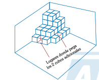
27. Camila visitó a su médico, quien le recetó tomar tres pastillas del medicamento A cada 8 horas y dos tabletas del medicamento B cada 6 horas durante un tiempo determinado. Camila inició y terminó su tratamiento tomando simultáneamente ambos medicamentos según la receta del médico. Si el costo de cada pastilla es de 7 soles y el de cada tableta es de 8 soles y, si lo que gastó en pastillas es tanto como lo que gastó en tabletas, ¿cuántos días duró su tratamiento?
28. En el siguiente arreglo, considerando igual distancia mínima de una letra a otra en todas las lecturas, ¿de cuántas maneras diferentes se puede leer la palabra POLLO?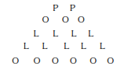
29. A Ramón le preguntaron qué edad tiene y él respondió de la siguiente manera: - Tengo más de 16 años. - El número que indica mi edad, en años, es un número par. - Hace 5 años mi edad, en años, era de una cifra. Si se sabe que Ramón miente siempre, ¿dentro de cuántos años Ramón tendrá 20 años?
30. Juan tiene cuatro frascos herméticamente cerrados y no transparentes, dos de color blanco y dos de color rojo. Uno de los frascos contiene caramelos sabor a fresa; otro frasco contiene caramelos sabor a piña; otro, caramelos sabor a naranja y el último, caramelos sabor a pera. Se sabe que: I. Los caramelos sabor a fresa y los caramelos sabor a naranja se encuentran en frascos de colores diferentes. II. Si los caramelos sabor a fresa están en un frasco rojo, entonces los caramelos sabor a piña y los caramelos sabor a pera están en frascos del mismo color. Luego, es siempre cierto que
31. 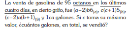
32. En cierto colegio, la cantidad total de estudiantes es un número de 3 cifras que se divide en forma equitativa en 14 aulas. Si en un simulacro de sismo todos se reunieron en el patio en grupos de 10 estudiantes y sobraron 8, determine la suma de la mayor y menor cantidad posible de estudiantes que puede haber en dicho colegio.
33. Valentina y Gerardo se asociaron para abrir un negocio por campaña escolar, reuniendo ambos un capital de 8000 soles, y al finalizar la campaña obtuvieron una ganancia total de 6000 soles. Si Gerardo aportó 1600 soles menos que Valentina, ¿cuántos soles ganó Gerardo en dicho negocio?
34. En una práctica de entrenamiento de fútbol, el entrenador ubica a cuatro jugadores en las posiciones P, A, B y C, tal como se muestra en la figura. Si PA = 35 m, AC = 40 m, PC = 45 m, A, B y C son colineales y el jugador ubicado en B equidista de los jugadores ubicados en A y C, halle la distancia que recorre el balón al desplazarse en línea recta desde P hacia B. 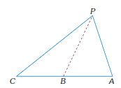
35. En la figura se muestra una piscina circular cuyo radio mide 8 m y a su alrededor se tiene una superficie antideslizante en forma de corona circular cuya diferencia de sus radios es de 2 m. Si la región rectangular ABCD representa la proyección ortogonal de una plataforma que sostiene el trampolín que se usa para saltar a la piscina tal que BP = PQ, halle el largo de la plataforma de salto.
36. En la figura se observa un pedestal cuya forma es de un tronco de pirámide cuadrangular regular ABCD-EFGH. Si AB =14 dm, EF =24 dm y CG = √194 dm, halle la superficie lateral del pedestal.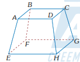
37. Mario y Pedro tienen, cada uno, una cierta cantidad de canicas. El doble de canicas que tiene Pedro, aumentado en tres, supera a lo que tiene Mario; pero el doble de canicas que tiene Pedro es menor al triple de lo que tiene Mario, disminuido en siete canicas. Si se sabe que el número de canicas que tiene Mario es menor a cinco, ¿cuál es la máxima cantidad de canicas que tienen, juntos, Mario y Pedro?
38. La propina acumulada que tiene Raúl es 150 soles menos que el doble de la propina en soles que reunió Sabina y la séptima parte de la propina de Raúl es 200 soles menos que la propina de Sabina. Determine la suma, en soles, de ambas propinas.
39. Se construye una cisterna cilíndrica recta de 4 m de altura para almacenar agua. Si la longitud de la circunferencia de su base es numéricamente igual a la suma de las soluciones de la ecuación 3cosx/(1+cos2x) = 2cosx en el intervalo [0; p], determine el volumen de agua, que se puede almacenar en la cisterna.
40.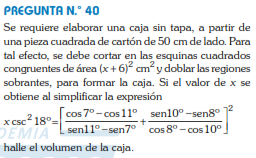
41. lenguaje El diptongo es la ocurrencia de dos vocales contiguas en una misma sílaba. De acuerdo con lo afirmado, señale la alternativa que presenta el número exacto de diptongos en el enunciado: Las tiendas de conveniencia han aumentado en nuestra capital debido a su buen servicio y atención continua.
De acuerdo con las reglas especiales de acentuación escrita de las palabras monosilábicas, señale la alternativa que presenta correcto empleo de la tilde diacrítica según la normativa vigente de la RAE.
43. Si consideramos la clasificación de Sanders Pierce, los signos se clasifican en índices, íconos y símbolos. Según lo señalado, seleccione la alternativa donde se hace referencia a un elemento considerado ícono.
44. Sintácticamente, la oración está conformada por dos estructuras funcionales: sujeto y predicado. El sujeto, a su vez, puede ser clasificado en atención a diversos criterios. Según ello, marque la alternativa que corresponde a la clase de sujeto de la estructura subrayada en el enunciado: La crisis de nuestro fútbol no ha afectado la fe de los hinchas peruanos.
45. La oración, según su complejidad, se clasifica en simple o compuesta según esté conformada o no por proposiciones. De acuerdo con ello, señale la alternativa que presenta oración compuesta.
46. La RAE establece los requisitos que debe cumplir una expresión lingüística para ser escrita con mayúscula inicial. En correspondencia con esta afirmación, señale la alternativa que presenta el uso correcto de las letras mayúsculas.
47. La oración compuesta subordinada adverbial es aquella que está conformada por dos proposiciones con diferente valor sintáctico: la principal y subordinada. La proposición subordinada cumple el rol de un adverbio y puede ser clasificada en temporal, locativa, modal, concesiva, causal, condicional, etc. De acuerdo con lo afirmado, señale la alternativa reconocida como oración compuesta subordinada adverbial concesiva.
48. Entre las figuras literarias, ............. es la alteración del orden normal de las palabras dentro de la oración, como, por ejemplo, ..............
49. De acuerdo con las características formales y temáticas de la obra «El caballero Carmelo», de Abraham Valdelomar, determine los enunciados correctos. I. Empleo de un narrador que evoca un suceso ocurrido en el pasado II. Recreación de situaciones familiares en festividades pueblerinasIII. Uso frecuente de múltiples narradores en el relato festividades pueblerinas III. Uso frecuente de múltiples narradores en el relato de lo acontecido IV. Ausencia de elementos decadentistas en dicho relato
50. Con respecto a la novela El mundo es ancho y ajeno, de Ciro Alegría, es posible afirmar que su aporte a la tradición del relato indigenista en el Perú consistió en que
51. Respecto del Poema del Mío Cid, obra cumbre de la literatura española, establezca el orden cronológico de los acontecimientos desarrollados en dicho texto. I. El Cid se emparenta con Alfonso, rey de Castilla y Aragón. II. Los hombres del Cid vencen en duelo a sus contrincantes. III. Los Infantes de Carrión azotan a doña Elvira y a doña Sol. IV. Las hijas del Cid se casan en segundas nupcias.
52. Ana es una adolescente que cursa el tercer año de secundaria y se siente fuertemente atraída por un compañero de clase. Ella está atravesando la etapa del enamoramiento que, de acuerdo con la teoría triangular de Sternberg, suele ser de gran intensidad, pero de corta duración. Determine el valor de verdad (V o F) de los siguientes enunciados referidos a las características de esta etapa de la vida de Ana. I. Ve y comenta lo que publica su enamorado en sus redes sociales. II. Pierde el apetito al punto de presentar trastornos de alimentación. III. Piensa en su enamorado con la ilusión de que es un ser perfecto y sin defectos. IV Descuida su apariencia, tiene un pésimo rendimiento escolar y suele deprimirse.
53.Según Freud, los actos fallidos ocurren cuando no se obtiene el resultado explícitamente perseguido, sino que se produce un resultado diferente. Pueden ser errores de la palabra, de la memoria y/o de la acción que cotidianamente se realizan con éxito. La equivocación, en estos actos, se suele atribuir a la falta de atención o al azar. Sin embargo, Freud enfatiza que los actos fallidos
54. Las investigaciones demuestran que la motivación extrínseca puede ser una herramienta útil para iniciar una actividad que, por motivación intrínseca, nunca se habría hecho. Desde esta perspectiva, identifique cuál o cuáles de las siguientes situaciones ejemplifica esta idea. I. Luis, de 18 años, detesta ir al gimnasio. Para motivarlo, su mamá ha considerado concederle lo que más quiere, que es manejar su auto. Ella espera que así su hijo encuentre el gusto por ir al gimnasio, pero no lo consigue. II. A Pedro le complace ayudar a sus compañeros y siempre les explica, después de las clases, los temas tratados cuando ellos se lo solicitan; no obstante, desde que ellos le ofrecen regalos en agradecimiento. Pedro evita quedarse después de las dases. III. A Julio, de 12 años, no le gusta leer. Su mamá le ha comprado varios libros de terror que él mismo escogió y te ha ofrecido darle 50 soles por cada libro leído. Ya lleva leídos cuatro libros a pesar de que su mamá dejó de darle dinero. IV. María, de 15 años, ha empezado a cocinar para su familia los domingos. Su mamá le daba propina por ello, pero como no le ha comentado nada sobre su comida, ha perdido el interés por cocinar a pesar de que su mamá le ha prometido aumentar la propina.
55. Según la teoría motivacional de Maslow, las necesida- des humanas se organizan en una pirámide de cinco niveles. Los primeros cuatro son necesidades de défi- cit o carencia. En el quinto nivel están las necesidades del ser o del yo: necesidades del autorrealización. Marque la alternativa que contiene la afirmación que es concordante con esta teoría motivacional.
56. La teoría epistemológica genética de Piaget y la teoría histórico-cultural de Vigotsky constituyen los pilares del modelo cognitivo. Ambas teorías comparten su oposición al conductismo clásico y conciben a la persona como un ser activo que construye su aprendizaje; sin embargo, también presentan algunas diferencias. A partir de la información planteada, determine el valor de verdad (V o F) respecto de las diferencias entre ambas teorías. I. Vigotsky considera que los niños aprenden de madera autónoma, sin necesidad de interactuar, aunque reconoce que esto puede ser favorable; mientras que, para Piaget, la interacción social es condición necesaria. II. Vigotsky afirma que el lenguaje social influye en el desarrollo del niño desde que nace y es clave en el desarrollo humano; por el contrario, para Piaget, el pensamiento se desarrolla primero y es más importante. III. Piaget considera que los niños aprenden a edades establecidas por la maduración; en cambio, Vigotsky considera que es posible que el aprendizaje se adelante al desarrollo con ayuda de alguien que sabe más.
57. Para Bowlby, “el objeto principal no es la regulación de la distancia, sino la seguridad sentida como un estado que no depende solo de la conducta del cuidador, sino también de la experiencia interna del niño. Esta proximidad física tan necesaria para la supervivencia del bebé puede ser sentida como una necesidad emocional en años posteriores de la infancia y la edad adulta. El apego se ha de entender como una necesidad humana continua, no como una dependencia infantil que dejamos atrás al crecer”.A partir de la lectura, podemos inferir que el apego se produce
58. La adecuación administrativa de la fuerza armada a las condiciones del Estado de Derecho puede verse como el objetivo de una primera generación de reformas; en tanto que el diseño e implementación de dispositivos de disuasión proporcionados a las amenazas convencionales, que podemos calificar de residuales, constituyen el propósito de una segunda generación de reformas. Esta segunda generación hereda las tareas de la primera, las realiza en un nuevo contexto y desarrolla las capacidades militares adecuadas al fortalecimiento de la paz internacional. En segundo lugar, implica enfrentar las nuevas amenazas mediante planes estratégicos específicos y cooperación con otros Estados.De acuerdo con el pasaje, el ejercicio de las funciones de las Fuerzas Armadas implica
59. Identifique la alternativa que vincula correctamente la columna que contiene los nombres de conocidas instituciones de la sociedad civil (columna izquierda) con la que describe la función que cumple cada una de ellas (columna derecha).
60. Según el pasaje, uno de los atributos legales principales que tiene la Defensoría del Pueblo consiste en
61.De acuerdo con el texto, para cumplir cabalmente con sus funciones, como investigar y supervisar a otros organismos públicos, se infiere que
62. El inicio del largo gobierno del presidente Alberto Fujimori (1990-2000) encontró a las instituciones policiales y militares con dificultades salariales bajas, además de los heridos y fallecidos que afectaban a la oficialidad de dichas instituciones. Por otro lado, los gastos operativos del enfrentamiento a los grupos subversivos generaban permanentes problemas económicos, aunque la gran dificultad que cada vez tomaba mayor importancia era otra actividad ilícita que beneficiaba a los grupos interesados en la zona del Huallaga. En ese sentido, el problema a enfrentar por el Estado y las fuerzas armadas en esta región siempre estuvo relacionado, mayormente, con
63. En el periodo arcaico medio, se produjo la domesticación de animales y plantas. Esto tuvo como consecuencia un cambio paulatino tanto en la dieta como en la organización social de los humanos. Entre estos cambios se encuentran: I. La creación de una organización estatal compleja. II. La preferencia por el consumo de carne de camélidos. III. La domesticación de plantas macrotérmicas. IV. El aumento demográfico y de grupos que viven en cuevas.Indique cuáles son los cambios que corresponden al periodo mencionado.
64. En enero de 1928, en el marco de las nuevas ideologías políticas del siglo xx, los apristas crearon en México el Partido ............. que debería abanderar la lucha por la independencia económica contra el orden oligárquico y el gamonalismo. Fue un proyecto radical e insurreccional que proclamaba la entrega de tierras para sus trabajadores, la adopción del lema «tierra y libertad» y el desconocimiento de leyes favorables al gamonalismo e imperialismo, objetivos que se lograrían con la unión de todas las clases trabajadoras.
65. Muchos de los estudios de antropología física referentes a la evolución humana sostienen que nuestra especie posee rasgos singulares que nos han permitido destacar dentro de reino animal. Uno de esos rasgos es el bipedismo, lo que nos permite afirmar que
66. La crítica principal que se hace a la periodización de la historia universal en Edades Antigua, Media, Moderna y Contemporánea es su carácter eurocentrista, dado que los hitos que marcan el cambio de las edades han sido elegidos desde una perspectiva histórica europea. Con respecto a esta crítica, determine el valor de verdad (V) o falsedad (F) de las siguientes proposiciones: I. Privilegia el papel de Occidente en la historia. II. Amplía la participación de los pueblos no europeos. III. Exalta los valores de la civilización cristiana.IV. Justifica el dominio de Occidente sobre el mundo.
67. Según el Sexto Informe Nacional al Consejo de Diversidad Biológica (CDB), se presentan en el Perú un total de 41 tipos de ecosistemas, los que, si se toma como referencia el Mapa Nacional de Ecosistemas (Ministerio del Ambiente, 2018), se agrupan en cinco categorías. Relacione la categoría respectiva con algunos de sus ecosistemas. I. Alta montaña II. Áridos y semiáridos III. ForestalesIV. Subterráneos a. Varillal, pantanos y sabanasb. Jalca, pajonales y páramoc. Cuevas y humedales kársticos d. Matorrales, desiertos y lomas
68. Los planos son representaciones espaciales a gran escala de un aspecto específico de un determinado espacio geográfico de extensiones pequeñas. Pero, con un buen detalle en su representación, se pueden utilizar en proyectos de ingeniería o urbanismo. Los planos pueden ser topográficos, urbanos, arquitectónicos y de ingeniería. Un plano topográfico, debido a la escala de representación, no necesita de
69. La sequía y la desertificación son consecuencias generadas por la acción humana y por factores climáticos, ambas relacionadas con la ausencia de agua de forma constante, principalmente en las regiones naturales de la costa y la sierra. Sin embargo, la sequía se caracteriza por ................... y la desertificación por ...................
70. De acuerdo con los resultados del Censo Nacional 2017: XII de Población, VII de Vivienda y III de Comunidades Indígenas y, en referencia a los resultados del censo del año 2007, identifique las proposiciones correctas. I. La población censada por región natural concentrada de la costa es del 54,6 % de la población total del país del año 2007. II. La densidad poblacional es de 24,3 hab/km , con un aumento en comparación con el 2007, año en que llegó a 22,0 hab/km . III. La razón de dependencia en nuestro país es de 53,3 dependientes por cada 100 personas en edad de trabajar. IV. El porcentaje de convivientes disminuye progresivamente teniendo un 25,7 % del total de población del país.
71. En una encuesta realizada a empresarios participantes en el CADE Ejecutivo 2022 sobre las funciones que cumple el Banco Central de Reserva del Perú (BCRP), estos respondieron lo siguiente:I. Emite billetes.II. Supervisa los bancos.III. Emite monedas.IV. Informa periódicamente sobre las finanzas nacionales.V. Crea bancos y cooperativas.VI. Administra las reservas internacionales. VII. Regula la moneda y el crédito del sistema financiero.Identifique la alternativa que contiene las funciones incorrectas.
72. En un mercado de Lima Metropolitana se produce un incremento en el precio de la papa y la carne de ave, entre otros productos. Si se asume que, respecto al precio, la demanda de la papa es inelástica y la de carne de ave es elástica, ¿qué ocurre con el monto del gasto en estos productos por parte de las familias?
73. En el marco de un régimen de tipo de cambio flexible, en el que los depósitos de ahorro bancario en moneda nacional (soles) son sustituibles por los depósitos de ahorro en moneda extranjera (dólares), el tipo de cambio tenderá a subir si
74. Micaela es una adolescente que tiene un particular gusto por los picarones peruanos y asiste a una dulcería para consumir dicho bien. No obstante, ella mencionó que la satisfacción que obtenía a partir del consumo de los picarones iba disminuyendo a medida que comía una unidad adicional del mismo y que incluso llegó a un nivel de saturación. En la ciencia económica, ello es conocido como
75. Fue en aquella noche de la reunión del Club de Ciencia Moral de Cambridge que Popper, con la espada desenvainada, comenzó su exposición negando que la función de la filosofía fuera resolver adivinanzas y empezó a enumerar una serie de asuntos que constituían típicos problemas filosóficos, cuando Wittgenstein, irritado, lo interrumpió, alzando mucho la voz. Pero Popper, a su vez, lo interrumpió también, tratando de continuar su exposición. En este momento, Wittgenstein cogió el atizador de la chimenea y lo blandió en el aire para acentuar de manera más gráfica su airada refutación a las críticas de Popper. Bertrand Russell intervino, con una frase perentoria: “¡Wittgenstein, suelte usted inmediatamente ese atizador!”. Todavía con el atizador en la mano, Wittgenstein aulló, en dirección a Popper: “¡A ver, deme usted un ejemplo de regla moral!”. A lo que Popper respondió: “No se debe amenazar con un atizador a los conferenciantes”. Se escucharon algunas risas. Pero Wittgenstein, verde de ira, arrojó el atizador contra las brasas de la chimenea y salió de la habitación dando un portazo.De acuerdo con el pasaje, el debate entre Popper y Wittgenstein provocó que este último, quien no aceptaba que hubiera problemas filosóficos legítimos, actuara por un razonamiento incorrecto conocido como
76. [...] Convinieron con los demás en llamar vicio a todo lo que el hombre, sin consideración por el público, fuera capaz de cometer para satisfacer alguno de sus apetitos, si en tales acciones vislumbrara la mínima posibilidad de que fueran nocivas para algún miembro de la sociedad y de hacerle menos servicial para los demás; y en dar el nombre de virtud a cualquier acto por el cual el hombre, contrariando los impulsos de la naturaleza, procurara el bien de los demás o el dominio de sus propias pasiones mediante la racional ambición de ser bueno.De acuerdo con el texto, determine el valor de verdad (V o F) de las siguientes afirmaciones: I. Los actos morales no son desinteresados porque buscan un interés.II. Solo es moral aquel que atenta contra sus propios impulsos.III. Los actos moralmente erróneos están motivados por los propios intereses.IV. La moral se determina por consideración a sus consecuencias.
Croce vuelve a concederle al arte un papel privilegiado. Es uno de los cuatro grados distintos del espíritu, diferenciados solamente por su orden de sucesión: arte, filosofía, economía y ética. El arte es “la contemplación del sentimiento” o “intuición lírica”, pura, ajena a toda referencia histórica o crítica. En verdad, las obras de arte únicamente existen en las almas de los que las crean o recrean; solo metafóricamente los objetos materiales: cuadros, esculturas, edificios, etc., se dicen “artísticos” y “obras de arte”. Para Kandinsky la obra de arte es aquello que “hace vibrar” el alma humana, incitándola para que se ocupe de sí misma y retorne a su ser. La abstracción, y no la imitación, no permite alcanzar tal objetivo. Kandinsky es relativista: cada época produce sus obras de arte originales. Dewey pone en el centro de su sistema la experiencia pluralista del ser humano, señalando que la experiencia por antonomasia es la estética, la cual no debe estar aislada de la vida cotidiana. Para que haya arte es indispensable la emoción –deseos, impulsos e imágenes subconscientes fusionados por la inspiración–; en caso de faltar, tendremos simplemente artesanías. Sin embargo, no basta, se requiere además habilidad técnica y capacidad de concretarla en un medio. El arte tiene una función educadora, porque sus elementos: imaginación, deseos y emociones humanas, pueden ser magníficos instrumentos para el bien moral.77. De acuerdo con el texto, se puede considerar que en los tres autores citados está presente
78. Según el pasaje, se puede inferir que una clara diferencia entre las ideas de Croce y Dewey radica en que
79. El caudal Q relaciona el volumen del fluido que pasa por un ducto en la unidad de tiempo. Si se emplea una bomba centrífuga de 1 HP para impulsar un caudal de 120 litros/minuto a través de un tubo de 2√2 cm de diámetro, ¿cuál será la rapidez de salida del agua por este tubo?
80. Los rieles por donde circulan los trenes se colocan con cierta separación entre ellos para evitar la deformación por los efectos de la dilatación debido a los cambios de temperatura. Si la temperatura durante un año fluctúa de 35 °C en verano hasta – 40 °C en invierno y los rieles son de acero con una longitud de 25 m, ¿qué separación mínima debe existir entre dos rieles contiguos para que no se deformen?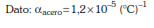
81. 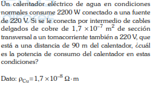
82. En un experimento, una partícula con carga q y masa m ingresa con velocidad v a una región donde existe un campo magnético uniforme B. La velocidad v forma un ángulo de 30° con la dirección del campo magnético. En estas condiciones, determine el radio y el tipo de trayectoria que describe la partícula.
83. Un cuerpo oscila con movimiento armónico simple, como muestra la figura; su periodo es 2 s y alcanza una rapidez máxima de 2 m/s. Determine la posición en el instante en que la rapidez es 1 m/s.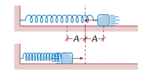
84. 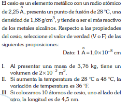
85. 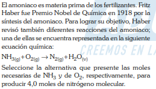
86. 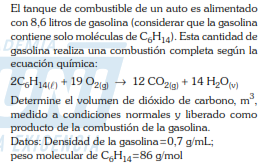
87. Se tiene una muestra de agua acidulada para realizar un proceso electrolítico, siendo sometido el sistema a una carga total de 40 Faraday; en dicho proceso, se obtienen gases en cada electrodo como producto de la reducción y oxidación, los cuales están bajo condiciones normales (C.N.). Calcule los gramos del gas liberado en la zona catódica y el volumen en litros liberado en la zona anódica, respectivamente. Datos: Pesos atómicos: H = 1, O = 16
88. El naftaleno es un compuesto orgánico de tipo aromático. Es un sólido blanco, muy inflamable y se sublima; aunque es usado comúnmente como repelente de polillas y es tóxico para los humanos. Se obtiene a partir del alquitrán de hulla. Su estructura química es Con respecto a la estructura del naftaleno, seleccione la alternativa que contenga el número de carbonos híbridos sp² y enlaces sigma carbono - hidrógeno, respectivamente.
89. La flotación es un proceso fisicoquímico utilizado ampliamente por la industria metalúrgica de nuestro país y consiste en concentrar elementos metálicos para su posterior refinación. Una empresa minero metalúrgica procesa por flotación una mena de 1000 toneladas de esfalerita (ZnS) (mineral valioso + ganga). Terminado el proceso (ver gráfico adjunto), se obtiene 100 toneladas de concentrado. Si se toma en cuenta que en el relave (residuo de la flotación) no hay presencia de zinc, determine el porcentaje en masa de zinc y los kilomoles de zinc presentes inicialmente en la mena.Peso atómico: Zn = 65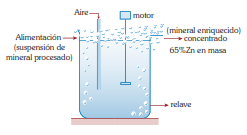
90. La cicutoxina es un compuesto orgánico oxigenado, presente en plantas como la cicuta. Es una sustancia tóxica que, una vez consumida, puede causar dolor abdominal, temblores e incluso la muerte. La estructura química de la cicutoxina se presenta a continuación: Con respecto a la cicutoxina, indique la alternativa que contenga su nombre correcto.
91. La digestión es el proceso por el cual se degradan los alimentos, por medio de transformaciones mecánicas y químicas, en sustancias que el organismo utiliza como fuente de energía para crecer y reparar tejidos. Observe, de izquierda a derecha, los esquemas mostrados e identifique en cada ejemplar el tipo de digestión que realiza.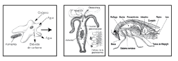
92. Uno de los cortes más valorados en la carne de vacuno, debido a su bajo contenido de hueso y grasa, es el lomo alto. Señale el tipo de tejido predominante en este corte.
93. Un paciente herido de bala sufre de un profuso sangrado y, debido a que no recibe atención médica inmediata, pierde el conocimiento. ¿Cuál cree usted que ha sido el fenómeno fisiológico que ha provocado este hecho?
94. Un investigador se propone realizar un estudio apli- cando el método científico. Determine la alternativa que contiene la secuencia correcta a seguir.I. Recoge más información y datos para comprender a cabalidad el fenómeno elegido.II. Se propone confirmar o refutar la hipótesis formulada para entender el fenómeno.III. Emplea sus sentidos para observar un fenómeno y recopila datos sobre el mismo.IV. Explica el fenómeno estudiado vía la confirmación de la hipótesis formulada.
95. Un hombre de grupo sanguíneo AB se casa con una mujer de grupo sanguíneo O. Sus dos primeros hijos son del grupo A y B, respectivamente, pero el tercero es del mismo grupo de la madre. Señale el fundamento científico de estos resultados.
96. Los agricultores de las zonas rurales de China utilizan arañas para eliminar insectos que afectan a sus cultivos. Señale en qué concepto biotecnológico se ubica este ejemplo de relación benéfica de los animales con la humanidad.
97. Parte de la evolución es la adquisición de nuevas destrezas acompañadas generalmente de nuevos desarrollos morfológicos y fisiológicos que se fijan en el pool genético de la especie. Por lo tanto, para afirmar que una especie es resultado del proceso evolutivo es necesario determinar
98. Alex observa una herencia muy peculiar en sus conejos en cuanto al pelaje: al cruzar un conejo de raza negra con uno de raza albina, obtiene crías de razas negra y chinchilla. Por otro lado, al cruzar uno de raza chinchilla con uno de raza albina, obtiene crías de razas chinchilla e himalaya, no observando ninguna otra coloración. Al respecto, ¿cuál de los siguientes enunciados es correcto?
99. El proceso fotosintético se inicia con la excitación de la clorofila a. Estas moléculas tienen la capacidad de recibir energía fotónica directamente del Sol. Sin embargo, también puede ser excitada indirectamente por la energía transferida de los
100. Determine el valor de verdad (V o F) de los siguientes enunciados relativos al transporte del agua en las plantas.I. El agua viaja de zonas de menor potencial hídrico a zonas de mayor potencial.II. La mayor parte del agua que es absorbida por la planta se evapora en las hojas.III. El transporte del agua en las plantas ocurre principalmente a favor de la gradiente.IV. La teoría de la cohesión-tensión explica el ascenso del agua por el xilema.V. La absorción del agua ocurre a nivel de los pelos absorbentes de la raíz.